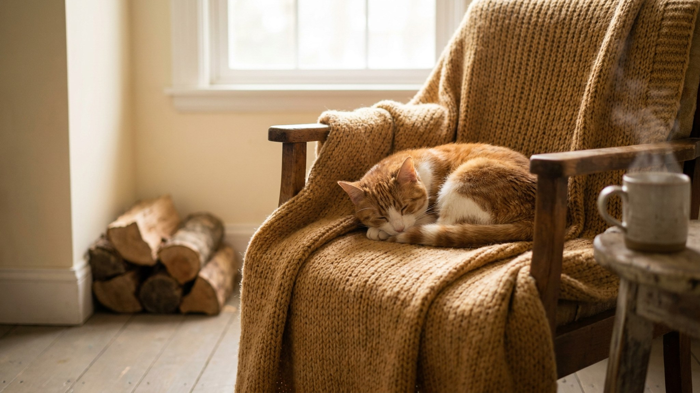

Берёшь на руки, и через секунду она уже выкручивается, спрыгнула, ушла. Знакомо? За этим стоит конкретная причина, не характер и не нелюбовь: удерживание на весу ощущается кошкой как угроза. Ниже пять таких причин и пошаговый план, как аккуратно изменить ситуацию.
🐾 У вашей кошки так же?
Расскажите в AnimaLife, как ведёт себя ваш питомец, — приложение объяснит причину и даст пошаговый план. Бесплатно, без записи к специалисту.
Разобрать свой случай → Разобрать в MAX →
У вас iPhone? AnimaLife есть в App Store
Кошка хищник, привыкший контролировать пространство и пути отхода. Когда её берут на руки, два главных ресурса исчезают сразу: опора под лапами и возможность уйти. Просто инстинкт, миллионы лет которого не перебить вашим желанием обниматься.
Пять причин, по которым конкретная кошка вырывается:
Техника решает половину проблемы.
Берите снизу, не сверху. Одна рука поддерживает грудь, вторая держит зад. Лапы не висят. Кошка стоит на вас, а не болтается. Прижмите слегка: так она чувствует опору.
Сразу отпустите, если она напряглась. Держать через сопротивление: кошка запоминает, что руки опасны. Обратный результат, а не воспитание.
Резкий прогресс здесь не работает. Работает постепенная лесенка.
Правило одно: кошка всегда имеет право уйти. Когда она знает это, она реже пользуется этим правом.
Поведение меняется резко: была ласковой, теперь шипит при прикосновении, прячется, отказывается от еды. Кошки не «обижаются» на недели. Боль или плохое самочувствие они маскируют, а первый сигнал часто выглядит именно так: смена отношения к контакту. В таком случае не ждите.
Материал носит информационный характер и не заменяет очную консультацию ветеринара.
🐾 Хотите понять, что кошка говорит вам?
Опишите ситуацию или пришлите видео в AnimaLife — AI разберёт поведение вашего питомца и подскажет, что делать. Бесплатно, ответ за минуту.
Разобрать поведение → Разобрать в MAX →
У вас iPhone? AnimaLife есть в App Store
🐾 Понравился разбор?
Подпишитесь на канал — каждый день разбираем по одному тревожному симптому у кошек и собак: что в пределах нормы, а когда пора к врачу. Подпишитесь, чтобы не пропустить разбор, который может спасти здоровье вашего питомца.